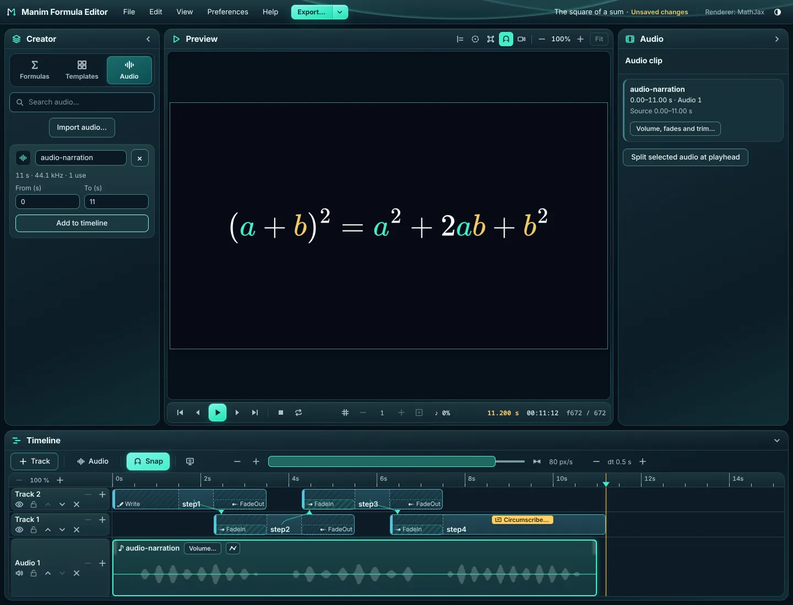
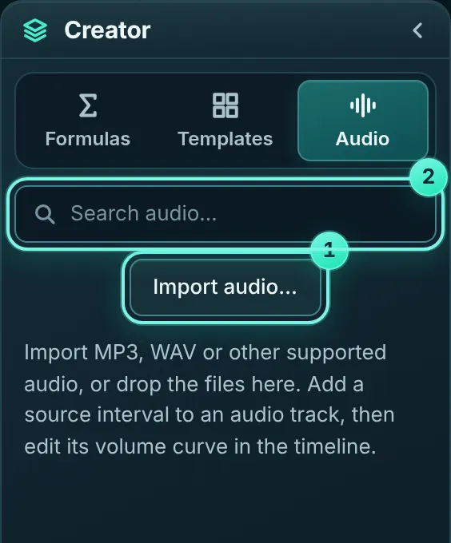
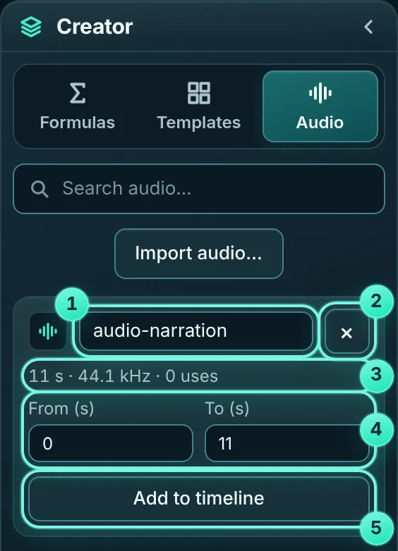
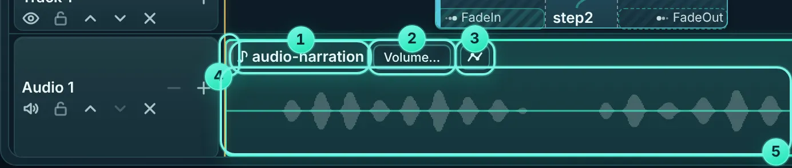
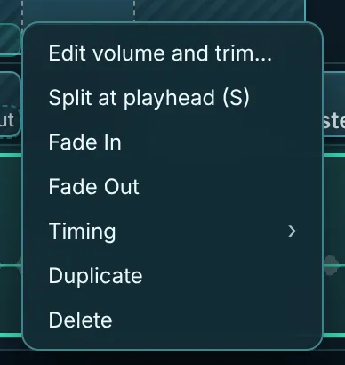
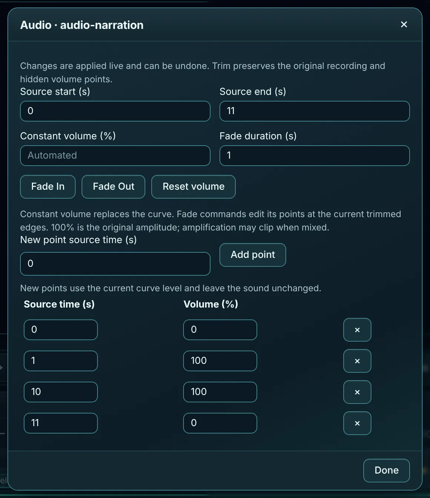
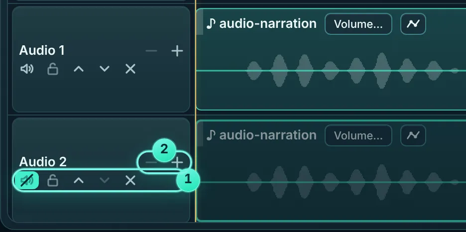
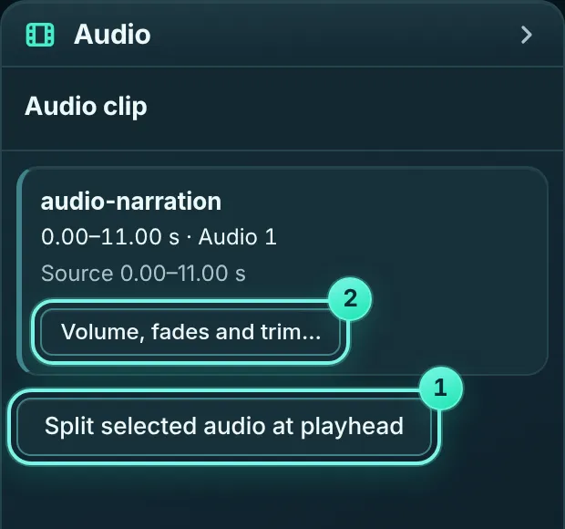
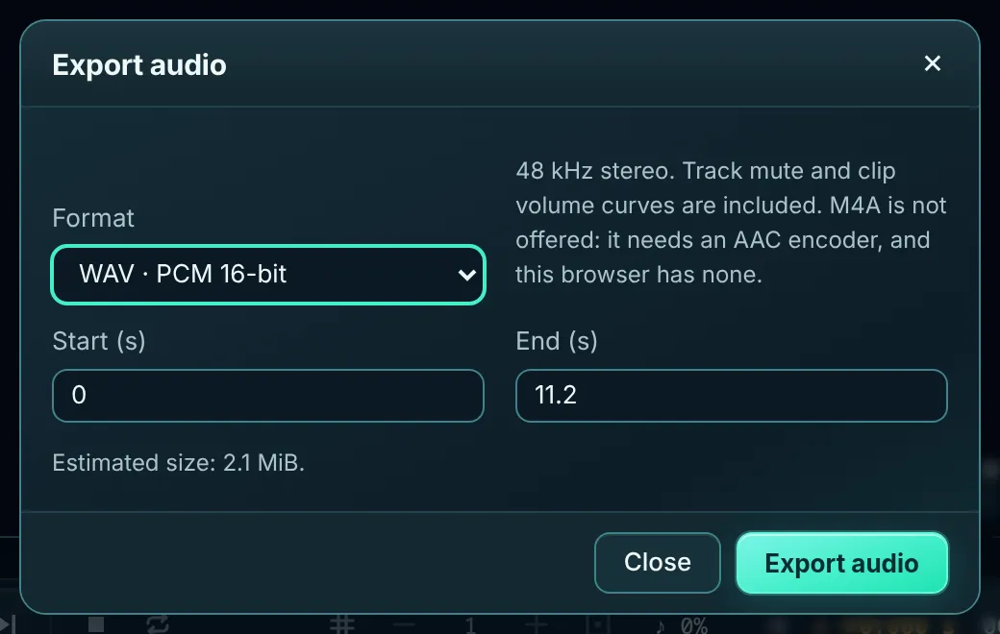
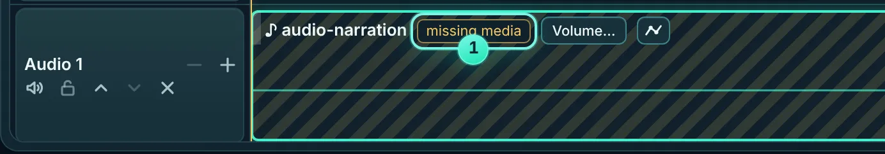

Audio
Put a voice-over or a music bed under your animation. Import a recording, place it on an audio track, cut it, shape its volume, and hear it with the scene.

The parts of sound
Sound has three parts. A recording is a sound file that you import once; it lives in the Creator’s Audio tab. A clip is a piece of a recording placed on the timeline, with its own trim and its own volume. An audio track is a row of the timeline that holds clips.
Nothing you do to a clip changes the recording. Trimming and splitting choose which part plays; the volume line says how loud. The sound plays with the scene in the Preview, goes into a video when you ask for it, and can be exported alone.
The figures on this page use the example below and an eleven-second recording made for it: a synthetic hum in three phrases, with a pause after each, that stands in for a voice. Download both to follow along.
audio-narration.mp3 (66 KB) is the recording. The project is the card below: download it, choose File ▸ Open…, press Other file… and pick the file (Projects and files explains the dialog).
Importing a recording
Open the Audio tab of the Creator. Press Import audio… and choose one file or several, or drag audio files from your desktop onto the tab: while they are over it, the tab says Drop audio to import it.

MP3 and WAV are the formats to count on. The file picker also lists M4A, AAC, FLAC, OGG, Opus and WebM, and any other file comes in if your browser can decode its sound. When it cannot, a notice says Could not import and the file’s name, with the reason: for example This browser cannot decode the audio in this file. or This file does not contain an audio track.
While a file is read, the tab says Preparing audio-narration.mp3… and then Importing audio-narration.mp3 · 42%, with a Cancel button. Files that you give while one is being read wait for their turn.
The recording’s row

- Name. A recording is named after its file. Click the name to change it; Enter or leaving the field keeps it and Esc takes the edit back. A name cannot be empty. Each rename is one undo step.
- Importing the same file twice does not add it twice: a notice says which recording it already is.
- A different file whose name is in use asks for a name of its own first (Name already in use, with the first free name proposed). Don’t import leaves the file out.
- Delete. The × deletes the recording and every clip made from it. When clips use it, a dialog counts them and you confirm by holding its button; Undo brings the recording and its clips back. While one of its clips is on a locked track, the × waits for you to unlock the track.
- Search. The field above the list filters it by name.
Putting it on the timeline
A recording does nothing until a piece of it is on the timeline. Choose the piece with From (s) and To (s) — the whole recording by default — and press Add to timeline.
- The clip starts at the playhead, on the first unlocked audio track that has room there. When none has, the timeline adds a track, named Audio 1, Audio 2 and so on: the first number no track has. The new clip is selected and scrolled into view.
- You can also drag the button onto an audio track: the clip lands where you drop it. A locked track takes no drop.
- A drop on a track that has no room there, or a placement that would end after 60 minutes of project time, is refused with the notice Audio does not fit here: the sound is never shortened to fit. Add to timeline never runs out of room, because it adds a track.
- Place the same recording as many times as you like. Each clip has its own part, trim and volume, and the row counts them (2 uses).
The Audio button of the timeline’s toolbar adds an empty audio track at the bottom of the list, named in the same way. Audio tracks mix: sounds on different tracks play together, and clips on one track cannot overlap.
Anatomy of a clip

- The name, with a ♪. Drag it to move the clip.
- Volume… opens the volume editor (later in this page).
- The volume-line button turns on the editing of the volume line on the clip itself.
- The strips at the top corners are the handles that trim the clip.
- The graph is the waveform of the recording, with the volume line over it.
A clip on a muted track is dimmed. A clip whose recording is missing is hatched (see Saving).
Moving, trimming and splitting
Move
Drag a clip by its name — or from anywhere on it, until you turn the volume line on — to move it along its track or to another audio track. Snap pulls its edges to the playhead, to the edges of other clips and to the ruler’s small ticks; to place it freely, hold Shift while you drag (press the clip first: Shift at the press adds the clip to the selection, or takes it out when it was selected). Clips can only go to audio tracks. A selection of sounds and formulas together moves together in time.
Trim
Drag the handle at the start or at the end of a clip to trim it. Trimming never cuts the recording: drag the edge back and the sound comes back. Trimming the start leaves what remains where it was in time. An edge stops at the next clip of the track and at the ends of the recording.
The edges snap like any other. The volume editor has two fields, Source start (s) and Source end (s), for a trim by the second.
Split
Put the playhead where the cut goes, select the clip and press S. The clip’s menu has Split at playhead (S) too, and so does the Animations panel, with its button Split selected audio at playhead (the panel is titled Audio while only sounds are selected). Both parts keep the volume curve of the original, so the sound is the same with the cut as without it, even in the middle of a fade. Both are selected afterwards: a drag moves both, and a click on one part selects just that part.
When the playhead is not inside a selected clip of an unlocked track, the menu entry and the button of the panel say so in a notice and change nothing. S does the same while a clip of an unlocked track is selected.
Duplicate, delete and the clip’s menu

Ctrl+D copies the selected clips, each into the free time after it on its own track, and selects the copies. Delete removes the selected clips; Undo brings them back. Deleting a clip from the middle of a track leaves a gap: the clips after it do not move. The Timing › entry copies when a clip starts and ends and pastes it onto another (see Timing tools).
Volume
The line over the waveform is the clip’s volume. 100% is the loudness of the recording and sits at mid-height of the graph; 0% is silence, at the bottom; 400% is the loudest the editor allows, at the top. Fades and reductions have the lower half of the graph, amplification the upper half.
Until you turn it on, the line is a drawing: a drag anywhere on the clip moves the clip, so that a drag meant for the clip never changes its volume. The button beside Volume… turns the editing on, for that clip only. A scale (400%, 100%, 0%) appears, the line and its points become handles, and the clip then moves by its name alone.
| Gesture | What it does |
|---|---|
| Drag the flat line up or down | Changes the level of the whole clip. |
| Double-click the line | Adds a point at the level the line has there: the sound does not change. |
| Drag a point | Moves it in time and in level. It stops at its neighbours. |
| Drag a segment between two points, up or down | Moves both of its points by the same amount, so its slope stays. |
| Arrow keys on a focused point | ↑ ↓ change its level by 1% (Shift: 10%); ← → move it by 0.01 s (Shift: 0.1 s). |
| Delete on a focused point | Removes it. |
| Enter on a focused point | Opens the volume editor. |
| Esc during a drag | Takes the drag back. |
Each drag is one undo step. The line before its first point and after its last point stays at the level of that point.
The volume editor

Open it with Volume… on the clip, with a double-click on the clip, with Edit volume and trim… in its menu, or with Volume, fades and trim… in the Animations panel. It is the numeric side of everything above, and what you change applies at once and can be undone.
- Source start (s) and Source end (s): the part of the recording the clip plays (the trim).
- Constant volume (%): one level for the whole clip, from 0 to 400. It replaces any curve; with a curve the field is empty and says Automated.
- New point source time (s) and Add point: a point of the line at that second of the recording, at the level the line has there. Enter in the field adds it, so a point can be made without the mouse.
- The table lists every point with its time and its level, each editable, and a × that removes it.
Fades
Fade In and Fade Out put ordinary points of the line at the clip’s trimmed edges: a ramp from silence at the start, or to silence at the end. Fade duration (s) says how long. Until you type one, the fade is half the clip, up to 0.5 s, and follows the clip when you trim it; a duration you type stays. Applying a fade again replaces the points of its stretch, and points outside it stay for when you restore a trim. Reset volume goes back to a constant 100%. The clip’s menu has both fades too, at the default length.
When the mix is too loud
Two sounds at 100% together, or a clip above 100%, can be louder than the output allows. While the scene plays, the playback bar shows the peak of the mix as ♪ 85%; over 100% it adds Clip and turns to the warning colour. Lower a clip or a track, or reshape the line, until it stays under.
Audio tracks

An audio track’s header has the keys of a visual track’s, except that the eye is a speaker.
- Name. Double-click it, or press Enter or F2 on it, to rename the track.
- Mute keeps the track out of playback and out of every export. Its clips stay, dimmed.
- Lock keeps its clips from being edited. A locked track still plays.
- Move up and Move down change the track’s place in the list. They do not change how the formulas are layered.
- Delete removes the track and its clips after a question you confirm by holding the button; Undo brings it back.
- The two small keys beside the name make that track one step lower or taller. That changes the view only.
The Animations panel — titled Audio while only sounds are selected — shows an Audio clip card for a selected clip: its times, its part of the recording, whether its track is muted or locked, and two buttons, Volume, fades and trim… and Split selected audio at playhead.

Two recipes
Take a pause out
- Put the playhead at the start of the pause and split the clip (S).
- Put the playhead at the end of the pause, click the part on its right to select it, and split again.
- Select the middle part, the pause, and press Delete.
- Drag the part on the right to the left until its start meets the end of the part on the left: with Snap on, it jumps onto that edge.
Make music quieter under a voice
- Import the music and place it on its own audio track, under the voice.
- Turn on the music’s volume line, and double-click it four times: just before the voice starts, as it starts, as it ends, and just after.
- Drag the segment between the middle two points down to about 30%. The two ramps on its sides bring the music down and back up.
Keys and gestures at a glance
| What | How |
|---|---|
| Move a clip | Drag its name. Hold Shift during the drag to place it freely. |
| Trim a clip | Drag a handle at its top corners. |
| Split at the playhead | S |
| Duplicate | Ctrl+D |
| Delete | Delete or Backspace |
| Undo, redo | Ctrl+Z, Ctrl+Shift+Z |
| Add a point to the volume line | Double-click the line, once it is turned on. |
| Play, pause | Space |
Hearing it
Press Space or Play in the bar under the Preview: the sound plays with the scene. The first time, the bar says Preparing audio… while the editor reads the recordings; press the button again to cancel it. Moving the playhead, muting a track and editing a volume line all work while it plays. The sound follows the audio device’s clock, so picture and sound stay together.
A scene lasts until its last clip ends, a sound clip included. When the narration is longer than the formulas, the scene — and a video exported by the browser or by ffmpeg — lasts as long as the narration. File ▸ Project settings… can fix the length instead (Duration ▸ Fixed).
Exporting sound

Export ▸ Audio… writes the sound of the scene as a file: 48 kHz, stereo, with the volume curves and the track mutes applied. Choose a Format, a Start (s) and an End (s) — the whole scene by default, up to 60 minutes — and press Export audio.
| Format | What it is |
|---|---|
| WAV · PCM 16-bit | Uncompressed, about 11 MiB a minute; the dialog shows the estimated size. |
| WebM · Opus | Compressed, small. |
| M4A · AAC | Compressed. Only where the browser can encode AAC (Chrome and Edge on Windows and macOS); the dialog says so where it cannot. |
A video takes the sound along: Export ▸ Video… has an
Include audio option, described in
Exporting video. The exported Python has none: its dialog says
Audio is omitted from Manim exports. To add the sound to a scene rendered by
Manim yourself, call Manim’s self.add_sound("audio-narration.mp3") in the
scene (The generated Python).
An export needs the recordings of its clips that are not muted. When one is missing, the export stops before it starts and names it.
Saving, and a recording that is missing
A project with recordings is saved as an .mfe package: one
file with the project and every recording in it, the unused and the muted ones too. A
project without recordings is saved as .mfe.json, unless it was opened from a
package (File ▸ Save keeps it a package) or holds more font-text
shapes than a plain file carries. Open a package like any project
(File ▸ Open…, then Other file… for one
from your disk): the editor checks each recording and copies it into the browser’s
storage, with a progress dialog and a Cancel button for a large
file.
When the browser no longer holds a recording, its clips stay where they are, hatched and marked missing media, and the playback skips them. The recording’s row says Original unavailable, and a notice names the files.

- Import the same file again in the Audio tab: the clips come back to life, with their trims and volumes.
- File ▸ Save first looks for the missing recordings in the file it is about to replace, and brings them back from it. For what is still missing it asks; Save without the missing media writes a file whose clips stay marked, and Cancel writes nothing.
- An export stops at a recording that is missing and says which.
More about files and recovery: Projects and files. The layout of both kinds of file is in Project files and their format.
Limits
- A placement ends within 60 minutes of the project, and an export mixes an hour of sound at most. Projects of 40 to 60 minutes work; the usual size is under 15. A scene that is longer plays whole with its sound, but a video of more than 60 minutes is exported without it, and its dialog says so.
- A recording longer than an hour supplies the pieces you choose, up to 60 minutes each time.
- Importing MP3 works. Encoding new MP3 files does not.
- The editor does not record sound, reduce noise, equalise, stretch time or crossfade clips on its own: a fade is yours to draw.